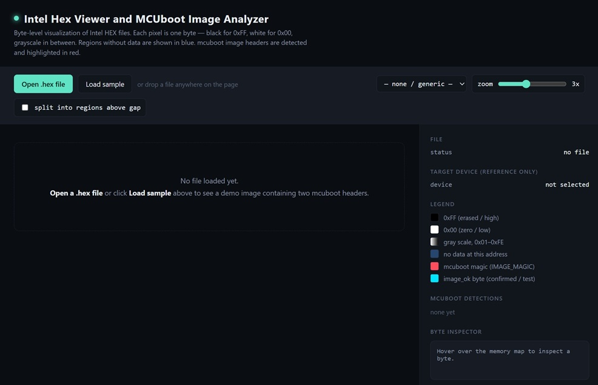

Intel Hex Viewer — User Guide
Welcome to the official documentation for Manual. Here you'll find explanations and step-by-step instructions for getting the most out of each tool.
Use the navigation on the left to jump straight to any chapter or tool.
Overview
The Intel Hex Viewer and MCUboot Image Analyzer is a browser-based tool for visual inspection of Intel HEX files at byte level. It renders the address space as a memory map and automatically searches the loaded data for MCUboot image headers and swap trailers.
The application runs entirely in the browser. The source code explicitly states that no file is uploaded anywhere. The supported file picker accepts `.hex`, `.ihex`, and `.txt` files.
Main capabilities
- Open an Intel HEX file from the local computer.
- Drag and drop a file anywhere onto the page.
- Load a built-in sample HEX file.
- Visualize every byte as a pixel.
- Distinguish actual data from addresses with no data.
- Detect MCUboot `IMAGE_MAGIC` patterns.
- Classify detections as VERIFIED IMAGE, UNCONFIRMED, INCOMPLETE, or filtered/likely non-image matches.
- Inspect individual bytes by hovering over the memory map.
- Inspect MCUboot header fields and image status.
- Display Intel HEX parser warnings.
- Select an nRF54L device profile for reference and address-range checking.
- Split sparse address spaces into separate regions.
- Adjust the visualization zoom.
- Download the generated sample HEX file.
Important: The selected target device is a reference only. It does not program or communicate with the device.
Privacy
The application is designed to process files locally in the browser.
The application footer explicitly states:
Intel Hex Viewer --- runs entirely in your browser. No file is uploaded anywhere.
Files are read using the browser's `FileReader` API and are not sent to a server by the application code.
2. System Requirements
The Intel HEX Viewer is a browser-based application that requires a modern web browser with JavaScript enabled. No software installation or dedicated server is required. The application runs entirely within the browser and processes HEX files locally; therefore, an internet connection is not required during normal operation. The tool does not specify minimum CPU, RAM, operating system, or browser-version requirements.
3. Installation & Setup
The Intel HEX Viewer is provided as a web-based application and does not require a local software installation.
To access the application, open the following web address in a supported web browser:
https://chriskurz.github.io/The application is ready for use after the page has loaded. No additional software, libraries, or server components need to be installed. The Intel HEX files selected for analysis are processed locally within the browser.
4. Getting started
4.1 Open the application
Open the HTML application in a modern web browser.
The initial screen shows an empty memory-map area with the message:
No file loaded yet.
The toolbar is displayed at the top of the page.
4.2 Load an Intel Hex file
There are two ways to load a file:
- Option A - File picker
1. Click Open .hex file
2. Select an Intel HEX file from your computer.
3. The application reads the file locally and renders the memory map.
The file input accepts: `.hex`, `.ihex`, `.txt`
- Option B - Drag and drop
1. Select the HEX file in your file manager.
2. Drag it onto the application page.
3. Release it anywhere on the page.
The application reads the dropped file and displays it automatically.
4.3 Loading the Built-in Sample
Click Load sample to generate and display a synthetic Intel HEX example.
The sample is designed to demonstrate:
- erased data (`0xFF`)
- MCUboot headers
- a confirmed image
- a test/pending image
- an unrelated occurrence of the MCUboot magic value
- zero-initialized data
- unwritten gaps
After loading the sample, Download sample.hex becomes available. This allows the generated sample to be saved locally and inspected independently.
The sample passes through the same loading and parsing path as a user-provided HEX file.
4.4 Quick Reference
| Task | Action |
|---|---|
| Open firmware | Click Open .hex file |
| Drag in firmware | Drop a file anywhere on the page |
| View demonstration | Click Load sample |
| Save demonstration file | Click Download sample.hex |
| Remove loaded data | Click Clear |
| Change device reference | Use Target device |
| Change visualization size | Use zoom |
| Separate sparse regions | Enable split into regions above gap |
| Change split distance | Edit the KB value |
| Inspect a byte | Hover over the memory map |
| Locate a detected image | Click its detection card |
| Review parse problems | Open Parser warnings |
| Understand colors | Use the Legend |
5. User Interface Overview
The interface consists of:
- Header
- Toolbar
- Memory map
- Information sidebar

5.1 Header
The header identifies the application as:
Intel Hex Viewer and MCUboot Image Analyzer
It describes the main visualization:
- one pixel represents one byte
- `0xFF` is black
- `0x00` is white
- intermediate values are grayscale
- addresses without data are blue
- detected MCUboot magic is highlighted in red
5.2 Toolbar Controls
Open .hex file
Opens the local file picker.
Use this control to load an Intel HEX file.
Load sample
Creates and loads the built-in demonstration HEX file.
Use this when learning the application or when you want to verify that the viewer is functioning correctly.
Download sample.hex
This button is hidden until the sample has been loaded.
Click it to save the generated sample as `sample.hex`.
Clear
Removes the currently loaded file and restores the initial empty state.
The following information is cleared:
- memory map
- file statistics
- MCUboot detections
- parser warnings
- byte inspector information
The selected device remains available as a reference selection.
Target device
The Target device (reference only) selector contains the following profiles:
| Device | NVM (RRAM) | RAM |
|---|---|---|
| nRF54L15 | 1.5 MB | 256 KB |
| nRF54L10 | 1 MB | 192 KB |
| nRF54L05 | 0.5 MB | 96 KB |
| nRF54LM20A | 2 MB | 512 KB |
| nRF54LM20B | 2 MB | 512 KB |
| nRF54LS05A | 0.5 MB | 64 KB |
| nRF54LS05B | 0.5 MB | 96 KB |
| nRF54LV10A | 1 MB | 192 KB |
The generic option is --- none / generic ---.
If a device is selected and the maximum address represented by the loaded file exceeds the device's configured NVM size, the sidebar displays a warning.
The device selection is informational; it is not used to connect to or program hardware.
Zoom
The zoom slider controls the visual size of the memory-map pixels.
Available values are:
1x through 6x
The default value is 3x.
Changing the zoom does not change the loaded data. It only redraws the visualization at a different pixel size.
Splitting Sparse Memory Regions
The checkbox:
split into regions above gap
controls how address ranges with large gaps are displayed.
Disabled
With the option disabled, the application keeps the parsed data in a single region. This is the default behavior.
Enabled
When enabled, the application separates regions when the gap between them exceeds the configured threshold.
The threshold is entered in KB.
The default threshold is: 2048 KB
This is useful for HEX files containing data at widely separated addresses, for example a main flash area and a distant special-purpose area.
Changing the threshold
1. Enable split into regions above gap.
2. Enter the desired threshold in KB.
3. The visualization is rebuilt automatically.
Smaller thresholds create more separate regions.
Display-size limitation
A single region has an internal display cap of 8 MB.
If a region exceeds this limit, it is skipped and a parser/display warning is shown. The application recommends enabling region splitting with a smaller threshold.
Reading the Memory Map
The main area displays the loaded address space as a collection of memory pages.
Each byte is represented by one pixel.
Byte colors
| Visualization | Meaning |
|---|---|
| Black | `0xFF` --- erased/high |
| White | `0x00` --- zero/low |
| Gray | `0x01`--`0xFE` |
| Blue | No data at that address |
| Red | MCUboot `IMAGE_MAGIC` |
| Cyan | `image_ok` status byte |
The memory map is therefore a visual representation of the byte values and the sparsity of the HEX file.
Page layout
The visualization uses:
- 128 columns
- up to 2048 rows per page
Each page is labelled with:
- start address
- end address
- number of bytes
- column × row dimensions
For example, a page label can identify an address range and its corresponding `128 × N` pixel layout.
Byte Inspector
Move the mouse over a pixel in the memory map.
The Byte inspector in the sidebar shows the corresponding address and byte value.
For a byte containing data, the inspector displays:
- address in hexadecimal
- value in hexadecimal
- value in decimal
- value in binary
Example format:
0x00001020
value: 0xA5 (165 dec, 10100101 bin)
If the selected address contains no data, the inspector reports:
no data at this address
If the byte belongs to a recognized MCUboot header field or trailer element, its role is also displayed.
Move the pointer outside the memory map to reset the inspector.
5.4 MCUboot
MCUboot Detection Cards
Each non-filtered detection is shown in the mcuboot detections section of the sidebar.
A detection card can show:
- global address
- region number
- offset within the region
- image classification
- firmware version
- build number
- load address
- header size
- protected TLV size
- image size
- flags
- decoded common flags
- image status
Click a detection card in the sidebar.
The application scrolls the corresponding memory-map location into view and briefly flashes the red marker around the detected header.
This provides a direct connection between the textual analysis and the byte-level visualization.
MCUboot flags
The application recognizes these common flag bits:
| Flag | Meaning |
|---|---|
| `0x00000001` | `PIC` |
| `0x00000004` | `ENCRYPTED_AES128` |
| `0x00000008` | `ENCRYPTED_AES256` |
| `0x00000010` | `NON_BOOTABLE` |
| `0x00000020` | `RAM_LOAD` |
| `0x00000100` | `ROM_FIXED` |
If none of the recognized flags are set, the application reports:
none of the common flags set
Unknown flag bits can cause a detection to be classified as unlikely.
MCUboot Swap Trailer and Image Status
The application also searches for MCUboot swap trailers.
The trailer contains a 16-byte MCUboot magic structure and an `image_ok` status byte.
The application supports two trailer formats:
1. Classic format --- write size 8.
2. Sized format --- the write size is stored in the first two bytes before the 14-byte suffix.
Recognized plausible write sizes are: 1, 2, 4, 8, 16, 32, 64
Image status
The `image_ok` byte is interpreted as follows:
| Value | Status |
|---|---|
| `0x01` | Confirmed |
| `0xFF` or unwritten | Test / pending |
| Other value | Unknown |
The status byte is highlighted in cyan in the memory map.
Status shown in detection cards
A detection can show: CONFIRMED
The `image_ok` byte is `0x01`.
TEST / pending
The `image_ok` byte is unset/erased. The application describes this as an image that will only boot once unless it is subsequently confirmed.
unknown
A trailer was found, but the `image_ok` value could not be interpreted.
no swap trailer found
No matching trailer was detected for the image.
6. Step-by-step instructions
For a typical firmware analysis, use the following sequence:
1. Open the Intel HEX file.
2. Review the File section.
3. Check the number and address range of the regions.
4. Review Parser warnings.
5. Select the target nRF54L device if you want an address-range reference.
6. Inspect the memory map visually.
7. Review mcuboot detections.
8. Start with detections marked VERIFIED IMAGE.
9. Compare version, build number, load address, header size, and image size.
10. Review the image status and any matching swap trailer.
11. Click a detection card to jump to its location in the memory map.
12. Hover over relevant pixels to inspect individual bytes.
13. If the address space is very sparse, enable split into regions above gap.
14. Adjust the split threshold and zoom as needed.
7. Troubleshooting
No memory map appears
Check the Parser warnings section.
If the file contains no usable data records, the application reports:
Could not find any data records in this file.
Verify that the selected file is an Intel HEX file containing valid data records.
The file loads but warnings are displayed
Review each warning carefully.
A checksum mismatch may indicate corruption. A missing EOF record may indicate an incomplete or truncated file.
A red MCUboot magic value appears but no verified image is shown
A four-byte MCUboot magic match alone is not sufficient.
The application performs additional checks on:
- header completeness
- header size
- image size
- flags
- image bounds
- TLV information magic
The match may therefore be an unrelated occurrence of the magic constant.
A region is skipped
A region larger than the 8 MB display cap is skipped.
Enable split into regions above gap and reduce the threshold so that the address space is divided into smaller regions.
The selected device shows an address warning
The maximum address represented by the loaded data exceeds the NVM size configured for the selected reference device.
Check that the selected device profile is correct and review the HEX file's address ranges.
The Byte inspector says "no data"
The cursor is positioned over an address that is not represented by a data record in the HEX file.
This is different from a stored byte whose value happens to be `0xFF`.
8. Known limitations
This application is primarily a visualization and analysis tool.
It does not:
- program an MCU,
- communicate with a connected target device,
- modify firmware,
- validate a firmware cryptographic signature,
- calculate or verify an image hash,
- perform a complete MCUboot image-security validation,
- prove that an image is bootable on hardware.
The MCUboot classifications are based on the checks implemented by the application. In particular, UNCONFIRMED detections require human interpretation because a missing TLV marker can have multiple explanations.
The device profiles are explicitly for reference only.
9. FAQ & Help
Q: What should I do if a tool won't load?
A: First try clearing your browser cache and reloading the page.